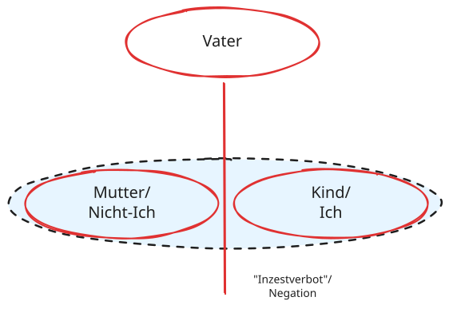
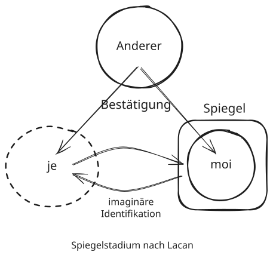

<!DOCTYPE html>
<html lang="en">
<head>
    <meta charset="utf-8" />
    <meta name="viewport" content="width=device-width, initial-scale=1.0, maximum-scale=1.0, user-scalable=no" />

    <title>Psychoanalyse und Medientheorie</title>
    <link rel="stylesheet" href="dist/reset.css">
    <link rel="stylesheet" href="dist/reveal.css" />
    <link rel="stylesheet" href="css/slides-extended.css" />
    <link rel="stylesheet" href="dist/theme/white.css" id="theme" />
    <link rel="stylesheet" href="plugin/highlight/zenburn.css" />
    <link rel="stylesheet" href="plugin/customcontrols/style.css">


    <link rel="stylesheet" href="Resources/css/slides-tokens.css" />
    <link rel="stylesheet" href="Resources/css/vl-slides.css" />

    <script defer src="dist/fontawesome/all.min.js"></script>

    <script type="text/javascript">
        function pageInIframe() {
            return (window.location !== window.parent.location);
        }

        let forgetPop = true;
        function onPopState(event) {
            if(forgetPop){
                forgetPop = false;
            } else if( pageInIframe()) {
                parent.postMessage(event.target.location.href, "app://obsidian.md");
            }
        }
        window.onpopstate = onPopState;
        window.onmessage = event => {
            if(event.data == "reload"){
                window.document.location.reload();
            }
            forgetPop = true;
        }

        function fitElements() {
            const itemsToFit = document.getElementsByClassName('fitText');
            for (const item in itemsToFit) {
                if (Object.hasOwnProperty.call(itemsToFit, item)) {
                    const element = itemsToFit[item];
                    fitElement(element, 1, 1000);
                    element.classList.remove('fitText');
                }
            }
        }

        function fitElement(element, start, end) {

            let size = (end + start) / 2;
            element.style.fontSize = `${size}px`;

            if (Math.abs(start - end) < 1) {
                while (element.scrollHeight > element.offsetHeight) {
                    size--;
                    element.style.fontSize = `${size}px`;
                }
                return;
            }

            if (element.scrollHeight > element.offsetHeight) {
                fitElement(element, start, size);
            } else {
                fitElement(element, size, end);
            }
        }

        document.onreadystatechange = () => {
            fitElements();
            if (document.readyState === 'complete') {
                if (pageInIframe() && window.location.href.indexOf("?export") != -1){
                    parent.postMessage(event.target.location.href, "app://obsidian.md");
                }
                if (window.location.href.indexOf("print-pdf") != -1){
                    let stateCheck = setInterval(() => {
                        clearInterval(stateCheck);
                        window.print();
                    }, 250);
                }
            }
        };
    </script>
</head>

<body>
    <div class="reveal">
        <div class="slides"><section  data-markdown><script type="text/template"><!-- .slide: class="drop" -->
<div class="" style="position: absolute; left: 0px; top: 0px; height: 1080px; width: 1920px; min-height: 1080px; display: flex; flex-direction: column; align-items: start; justify-content: center" absolute="true">

<div class="container" style="background-color: black">
<div style="position: absolute; width: 55%; height: 100%; bottom: 0; right: 0; background-image: url('https://upload.wikimedia.org/wikipedia/commons/2/29/Narcissus-Caravaggio_%281594-96%29_edited.jpg'); background-size: cover; background-position: center;"></div>
<div class="left-bottom-div" style="width: 60%"><div class="slide-subtitle-left" onclick="Reveal.getPlugins().notes.open();">
  <span>11. Sitzung: </span><span>Psychoanalyse und Medientheorie</span>
</div><div class="left-bottom-div" style="width: 90%; background-color: rgba(119, 47, 139, 1);">
<p class="slide-title-left" style="align-items: flex-end;">Echo und Narziss<br>Figurationen der Selbstreflexion</p>
<p class="slide-title-left" style="align-items: flex-start; font-size: smaller;">Dr. habil. Joachim Harst<br>Allgemeine und Vergleichende Literaturwissenschaft<br>Universität des Saarlandes</p>
</div></div></div>
</div>

<aside class="notes"><h2 id="freud-narzissmus">Freud: Narzissmus</h2>
<ul>
<li>Ausgang von These: „das Ich muss entwickelt werden” – Narzissmus als normale Phase dieser Entwicklung – lässt sich nicht direkt beobachten, sondern muss aus  Zügen des Erwachsenen rückerschlossen werden → Unterscheidung zwischen primärem und sekundärem Narzissmus</li>
<li>Beispiele<ul>
<li>Größenwahn des Schizophrenen</li>
<li>„Allmacht der Gedanken”/Animismus bei Kindern und „primitiven Völkern”</li>
<li>Wahl des Liebesobjekts nach der eigenen Ich-Vorstellung, Behandlung des eigenen Kindes</li>
</ul>
</li>
<li>der primäre Narzissmus als normale Entwicklungsstufe des Kleinkindes<ol>
<li>absolute Einheit mit Mutter/amorphes, Ich-loses Bündel aus konkurrierenden Empfindungen und Impulsen („zerstückelter Körper”)) – hier kann man noch nicht von Selbsterhaltung oder Egoismus sprechen</li>
<li>Herausbildung eines Ich, das mit Libido besetzt wird – „Allmacht der Gedanken”: die Mutterbrust als eigenes Organ, halluzinatorische Befriedigung</li>
<li>Ödipus: Scheidung der Mutter-Kind-Dyade, Nicht-Verfügbarkeit der Mutter, Kastrationsangst/Nein des Vaters (Gesetz), Internalisierung; </li>
<li>Ergebnis: Ich vs. Ich-Ideal; Narzissmus und Auto-Aggression</li>
</ol>
</li>
<li>Unterscheidung zwischen Ich-Libido und Sexuallibido – Parallelisierung mit Doppelexistenz des Individuums (Individuum: Ich/Gattung: Sex)</li>
<li>Diagramme aus früheren Folien<ul>
<li>[](screenshots/Screenshot 2026-06-22 11-35-47.jpg)</li>
<li>[](screenshots/Screenshot 2026-06-22 11-37-21.jpg)</li>
</ul>
</li>
</ul>
<h2 id="lacan-spiegelstadium">Lacan: Spiegelstadium</h2>
<ul>
<li>Entwicklungsstadium an der Schwelle zum Ödipus</li>
<li>das Kind und die Spiegelgestalt – Identifikation: Erkennen und Verkennen – die Illusion der einheitlichen Gestalt als Zwang (Unterschied zwischen „je” und „moi”, Reflexion, vgl. Ich-Ideal bei Freud) – auch hier: Narzissmus und Auto-Aggression</li>
<li>die Rolle des Blicks des Elternteils: Bestätigung, Begehren des Anderen</li>
<li>Übertragung auf Medientheorie: das Optische und das Imaginäre (Einbildung, Identifikation)</li>
</ul>
<h2 id="kritik">Kritik</h2>
<ul>
<li>Dichotomes Gender-Bild</li>
<li>Ahistorizität (bürgerliche Kleinfamilie)</li>
<li>Primitivismus<!-- .slide: class="has-light-background" data-background-color="lightgrey" --></li>
</ul>
</aside></script></section><section  data-markdown><script type="text/template"><!-- .slide: class="has-light-background drop" data-img-id="freud-portrait" data-background-color="lightgrey" -->
<div class="" style="position: absolute; left: 0px; top: 0px; height: 1080px; width: 1920px; min-height: 1080px; display: flex; flex-direction: column; align-items: start; justify-content: center" absolute="true">

<div class="container">
<div class="right-bottom-div" style="width: 60%;"><p class="right-title-text" style="transform: rotate(-79deg) translate(-10%, 60%); transform-origin: left top;"><span class="session-span" data-session="11">11. Sitzung: </span><span> Psychoanalyse und Medientheorie</span></p>
<div class="right-top-div">
</div>
<div class="right-image-source"><a href="#" title="" target="_blank">QUELLE<i class="fas fa-external-link-alt link-icon"></i></a></div></div></div>

<div class="" style="padding: 5px; box-sizing: border-box; position: absolute; left: 1%; top: 1%; height: 100%; width: 43%; display: flex; flex-direction: column; align-items: start; justify-content: center" >


- ["] Es ist eine notwendige Annahme, daß eine dem Ich vergleichbare Einheit nicht von Anfang an im Individuum vorhanden ist; das Ich muß entwickelt werden.
<p class="source">Freud, S. (1999). Zur Einführung des Narzissmus (1914). In A. Freud \& andere (Hrsg.), <em>Gesammelte Werke</em> (Vol. 10, pp. 137–170). Fischer.</p>
</div>
</div></script></section><section  data-markdown><script type="text/template"><!-- .slide: class="has-light-background drop" data-img-id="freud-portrait" data-background-color="lightgrey" -->
<div class="" style="position: absolute; left: 0px; top: 0px; height: 1080px; width: 1920px; min-height: 1080px; display: flex; flex-direction: column; align-items: start; justify-content: center" absolute="true">

<div class="container">
<div class="right-bottom-div" style="width: 60%;"><p class="right-title-text" style="transform: rotate(-79deg) translate(-10%, 60%); transform-origin: left top;"><span class="session-span" data-session="11">11. Sitzung: </span><span> Psychoanalyse und Medientheorie</span></p>
<div class="right-top-div">
</div>
<div class="right-image-source"><a href="#" title="" target="_blank">QUELLE<i class="fas fa-external-link-alt link-icon"></i></a></div></div></div>

<div class="" style="padding: 5px; box-sizing: border-box; position: absolute; left: 1%; top: 1%; height: 100%; width: 43%; display: flex; flex-direction: column; align-items: start; justify-content: center" >


## Freud: Narzissmus
- sekundärer Narzissmus: Beobachtbar an Patienten
- primärer Narzissmus als hypothetische Entwicklungsphase
	- Größenwahn des Schizophrenen
	- „Allmacht der Gedanken”/Animismus bei Kindern und „primitiven Völkern”
	- Wahl des Liebesobjekts nach der eigenen Ich-Vorstellung
	- Behandlung des eigenen Kindes
</div>
</div></script></section><section  data-markdown><script type="text/template"><!-- .slide: class="has-light-background drop" data-background-color="lightgrey" -->
<div class="" style="position: absolute; left: 0px; top: 0px; height: 1080px; width: 1920px; min-height: 1080px; display: flex; flex-direction: column; align-items: start; justify-content: center" absolute="true">

<div class="quote-bg"></div>


<div class="" style="padding: 20px; box-sizing: border-box; position: absolute; left: 10%; top: 10%; height: 80%; width: 80%; display: flex; flex-direction: column; align-items: start; justify-content: center" align="center">


## Freud: Primärer Narzissmus
1. Einheit mit Mutter/zerstückelter Körper
2. Herausbildung eines Ich, die Mutterbrust als eigenes Organ, halluzinatorische Befriedigung
3. Ödipus: Scheidung der Mutter-Kind-Dyade, Nicht-Verfügbarkeit der Mutter, Kastrationsangst/Nein des Vaters (Gesetz), Internalisierung; 
4. Ergebnis: Ich vs. Ich-Ideal; Narzissmus und Auto-Aggression
</div>
</div></script></section><section  data-markdown><script type="text/template"><!-- .slide: class="slide-bg-vignette has-light-background drop" template="" data-background-color="lightgrey" -->
<div class="" style="position: absolute; left: 0px; top: 0px; height: 1080px; width: 1920px; min-height: 1080px; display: flex; flex-direction: column; align-items: start; justify-content: center" absolute="true">

<div class="img-container">
<figure class="img-wrapper">


</figure>
</div>
</div></script></section><section  data-markdown><script type="text/template"><!-- .slide: class="slide-bg-vignette has-light-background drop" template="" data-background-color="lightgrey" -->
<div class="" style="position: absolute; left: 0px; top: 0px; height: 1080px; width: 1920px; min-height: 1080px; display: flex; flex-direction: column; align-items: start; justify-content: center" absolute="true">

<div class="img-container">
<figure class="img-wrapper">


</figure>
</div>
</div></script></section><section  data-markdown><script type="text/template"><!-- .slide: class="has-light-background drop" data-background-color="lightgrey" -->
<div class="" style="position: absolute; left: 0px; top: 0px; height: 1080px; width: 1920px; min-height: 1080px; display: flex; flex-direction: column; align-items: start; justify-content: center" absolute="true">

<div class="quote-bg"></div>


<div class="" style="padding: 20px; box-sizing: border-box; position: absolute; left: 10%; top: 10%; height: 80%; width: 80%; display: flex; flex-direction: column; align-items: start; justify-content: center" align="center">


## Lacan: Spiegelstadium
- Entwicklungsstadium an der Schwelle zum Ödipus
- das Kind und die Spiegelgestalt
	- Identifikation: Erkennen und Verkennen
	- die Illusion der einheitlichen Gestalt als Zwang 
	- Narzissmus und Auto-Aggression
- die Rolle des Blicks des Elternteils: Bestätigung, Begehren des Anderen
- Übertragung auf Medientheorie: das Optische und das Imaginäre (Einbildung, Identifikation)

</div>
</div></script></section><section  data-markdown><script type="text/template"><!-- .slide: class="slide-bg-vignette has-light-background drop" template="" data-background-color="lightgrey" -->
<div class="" style="position: absolute; left: 0px; top: 0px; height: 1080px; width: 1920px; min-height: 1080px; display: flex; flex-direction: column; align-items: start; justify-content: center" absolute="true">

<div class="img-container">
<figure class="img-wrapper">


</figure>
</div>
</div></script></section></div>
    </div>

    <script src="dist/reveal.js"></script>
    <script src="plugin/notes/notes.js"></script>
    <script src="plugin/markdown/markdown.js"></script>
    <script src="plugin/obsidian-markdown.js"></script>
    <script src="plugin/highlight/highlight.js"></script>

    <script src="plugin/zoom/zoom.js"></script>
    <script src="plugin/math/math.js"></script>
    <script src="plugin/mermaid/mermaid.js"></script>
    <script src="plugin/chart/chart.umd.js"></script>
    <script src="plugin/chart/plugin.js"></script>
    <script src="plugin/menu/menu.js"></script>
    <script src="plugin/customcontrols/plugin.js"></script>

    <script src="Resources/js/slide-img-db.js"></script>
    <script src="Resources/js/blockquote.js"></script>

    <script>
        function extend() {
            const target = {};
            for (let i = 0; i < arguments.length; i++) {
                const source = arguments[i];
                for (const key in source) {
                    if (source.hasOwnProperty(key)) {
                        target[key] = source[key];
                    }
                }
            }
            return target;
        }

        function isLight(color) {
            // normalize to rgb(a)
            const optionEl = document.createElement("option");
            optionEl.style.color = color;
            const normalizedColor = optionEl.style.color;

            const match = normalizedColor.match(/(\d+), (\d+), (\d+)/);
            if (!match) return false;
            const [, c_r, c_g, c_b] = match;

            const brightness = ((c_r * 299) + (c_g * 587) + (c_b * 114)) / 1000;
            return brightness > 155;
        }

        const bgColor = getComputedStyle(document.documentElement).getPropertyValue('--r-background-color').trim();

        if (isLight(bgColor)) {
            document.body.classList.add('has-light-background');
        } else {
            document.body.classList.add('has-dark-background');
        }

        // default options to init reveal.js
        const defaultOptions = {
            controls: true,
            progress: true,
            history: true,
            center: true,
            transition: 'default', // none/fade/slide/convex/concave/zoom
            plugins: [
                ObsidianMarkdown,
                RevealHighlight,
                RevealZoom,
                RevealNotes,
                RevealMath.KaTeX,
                RevealMermaid,
                RevealChart,
                RevealCustomControls,
                RevealMenu,
            ],
            allottedTime: "120",

            katex: {
                local: 'plugin/math/katex',
                extensions: ["mhchem"],
            },
            markdown: {
                gfm: true,
            },
            mermaid: {
                theme: isLight(bgColor) ? 'default' : 'dark',
            },
            customcontrols: {
                controls: [
                ]
            },
            menu: {
                loadIcons: false
            },
        };

        if ( pageInIframe() ) {
            defaultOptions.scrollActivationWidth = 5;
        }

        // options from URL query string
        const queryOptions = Reveal().getQueryHash() || {};

        const options = extend(defaultOptions, {"controls":true,"progress":true,"slideNumber":true,"center":false,"transition":"slide","transitionSpeed":"default","width":1920,"height":1080,"margin":0.04}, queryOptions);
    </script>

    <script>
      /**
       * KaTeX Equation Numbering Note
       *
       * KaTeX maintains a global equation counter for \begin{equation} environments.
       * When navigating between slides, reveal.js math plugin may re-render math, causing
       * equation numbers to change randomly.
       *
       * Note: Regular $$ blocks don't have equation numbers - only \begin{equation} does.
       *
       * If you experience issues with equation numbers changing:
       * Use manual \tag{} commands: \begin{equation}\tag{1} ... \end{equation}
       */

      Reveal.initialize(options);
    </script>
    <!-- created with Slides Extended reveal.html template -->
</body>
</html>
